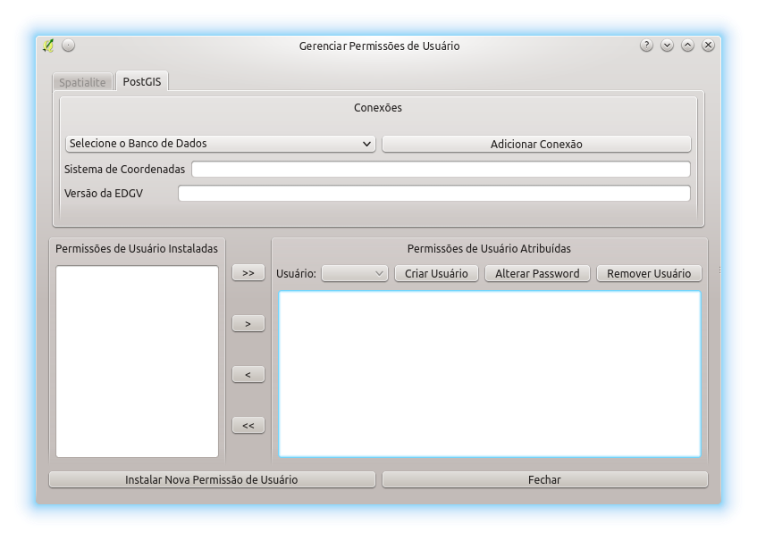
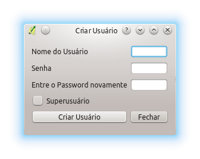
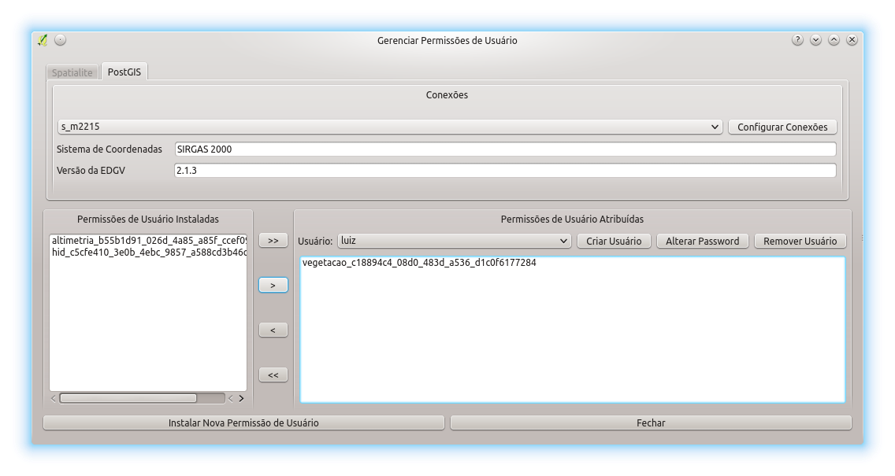
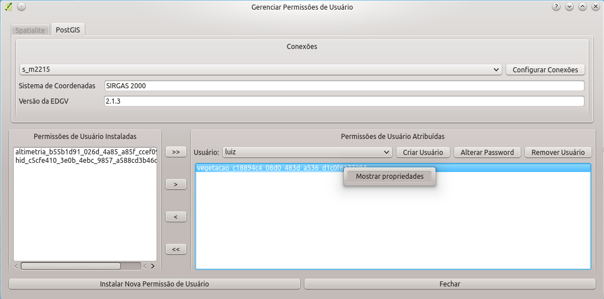
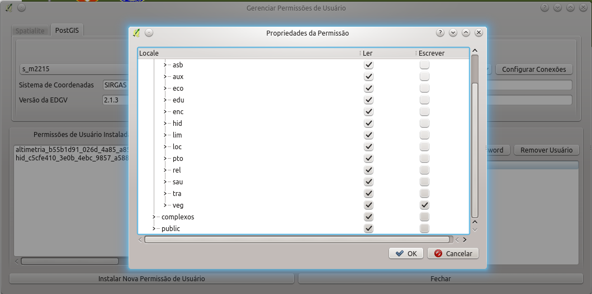

O DSGTools permite que sejam criadas permissões para os usuários. Essas permissões definem como o usuário terá acesso aos bancos de dados criados pelo DSGTools. A permissões só funcionam em bancos PostGIS.
Aqui é possível ver um vídeo mostrando como realizar a atribuição de permissões para um usuário. O vídeo mostra todo o fluxo de trabalho que deve ser feito pelo operador. Isso engloba a criação de usuários, criação de modelo de permissões, instalação de modelo de permissões e atribuição de permissões. Tudo isso é mostrado no vídeo, para maiores detalhes conceituais existem, abaixo do vídeo, os conceitos relacionados.
Inicialmente deve ser selecionado o banco de dados que será configurado. Caso o banco não esteja na lista pode-se efetuar a adição do banco pelo botão Adicionar Conexão.

Com a seleção do banco feita deve se selecionar um Usuário já criado no banco. Caso o usuário ainda não exista é possível criar com o uso do Botão Criar usuário como se pode ver na figura a seguir.

Com os dados preechidos é só clicar em Criar Usuário e esperar a mensagem de retorno. É possível definir também se o usuário que está sendo criado será ou não superusuário clicando em Supersuário. É possível também alterar o password com o botão Alterar Password e é possível remover o usuário selecionado com o botão Remover Usuário. Agora resta selecionar o usuário recém criado.
No caso em questão vamos trabalhar com o usuário "luiz". Abaixo pode se ver a janela para este usuário.
Com o usuário selecionado é possível ver as permissões já existentes no banco selecionado no campo Permissões de Usuário Instaladas, no caso: altimetria, hid, vegetação. Caso a permissão desejada não esteja lá, é possível clicar no botão Instalar Nova Permissão de Usuário (clique no link para maiores informações).
Com o modelo de permissões criado e instalado no banco de dados é possível se fazer a atribuição dessas permissões a um usuário selecionado. Suponhamos que o usuário criado seja "luiz", ao se fazer a seleção dele é possível ver as Permissões de Usuário instaladas no banco e as permissões que ele possui. Para se instalar um conjunto de permissões nova deve se selecionar uma (ou mais) permissões e clicar em >>, >, <, << para, respectivamente, atribuir todas as permissões, atribuir somente uma, remover uma e remover todas as permissões previamente atribuídas.
Supondo a atribuição das permissões de vegetação (onde é possível ver todo o banco mas somente editar a categaoria vegetação) teríamos o resultado como se pode ver na figura abaixo.

Desta forma as permissões do usuário "luiz" foram definidas.
Tendo sido definidas as permissões é possível ao usuário verificar as características das permissões instaladas e atribuidas através do clique com o botão direito em uma dada permissão. Isso pode ser verificado na figura abaixo.

Clicando-se na opção é aberta uma janela mostrando as características das permissões selecionada como se pode ver na figura abaixo.

Agora é possível conectar em um banco PostGIS previamente criado adicionando uma nova conexão. O vídeo abaixo mostra todos os passos para utilizar um usuário com suas permissões previamente atribuídas.